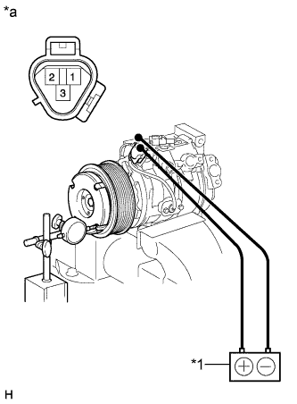

COMPRESSOR > REASSEMBLY |
| 1. INSTALL MAGNET CLUTCH ASSEMBLY |
Install the magnet clutch stator with the parts shown in the illustration matched.
 |
Using a snap ring expander, install a new snap ring with the chamfered side facing up.
Connect the connector.
Using a snap ring expander, install the magnet clutch rotor and a new snap ring with the chamfered side facing up.
Install the compressor washer(s) and magnet clutch hub.
Using SST, hold the magnet clutch hub and install the bolt.
| 2. INSTALL COOLER BRACKET |
Install the cooler bracket with the screw.
Attach the clamp.
| 3. INSPECT MAGNET CLUTCH CLEARANCE |
Clamp the cooler compressor in a vise.
Set the dial indicator to the magnet clutch hub.
|  |
Connect the battery positive (+) lead to terminal 3 of the magnet clutch connector and the negative (-) lead to the ground wire. Turn the magnet clutch on and off and measure the clearance.
| *1 | Battery |
| *a | Component without harness connected (Magnet Clutch Assembly) |
Remove the cooler compressor from the vise.